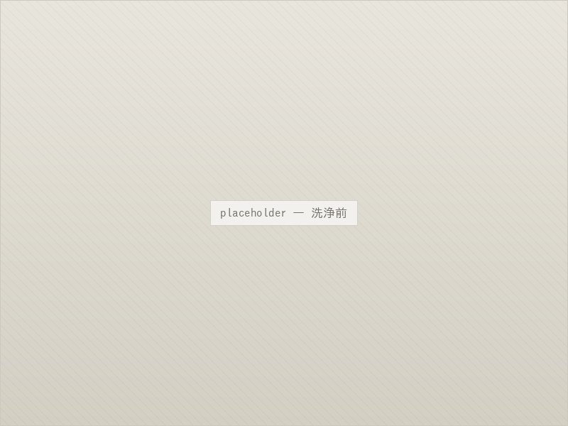

クリーニング
石を傷めずに、
本来の艶を取り戻します。
— About
お墓の汚れは、
こすっても落ちません。
お墓は屋外に建っているため、年月とともに雨だれの跡や苔、カビ、水垢が積み重なっていきます。とくに日当たりの悪い場所や樹木の近くでは、黒ずみや緑色の苔が目立つようになります。
こうした汚れは、水をかけてこするだけでは落ちません。かといって市販の強い洗剤や金属たわしを使うと、石の表面の艶を削り取ってしまい、かえって汚れが染み込みやすい状態になってしまいます。
当店では、石の種類と汚れの状態に合わせた方法で洗浄いたします。表面を傷めずに汚れだけを取り除き、本来の艶を取り戻します。
— 01 / Before & After
洗浄の効果
水垢と苔で黒ずんでいた墓石も、洗浄によって見違えるほど印象が変わります。彫刻文字の色を入れ直すと、さらにはっきりと読めるようになります。

ご注意
汚れの種類や石の状態によって、落ちる度合いは異なります。
長年放置された染みなど、完全には落としきれない場合もございます。
— 03 / Flow
ご依頼の流れ
- 1．お問い合わせ
- お電話またはメールで、墓地の場所とお墓の状態をお知らせください。
- 2．現地の確認・お見積もり
- お墓を拝見し、汚れの状態を確認したうえでお見積もりをお出しします。現地調査は無料です。
- 3．洗浄作業
- 石の種類と汚れに合わせた方法で洗浄します。立ち会いは不要です。
- 4．ご報告
- 作業後の写真をお送りし、仕上がりをご確認いただきます。
— 04 / Works
クリーニングの施工例

全体洗浄 / 久我山01

苔の除去 / 杉並02

文字の色入れ / 練馬03

外柵・敷地 / 三鷹04